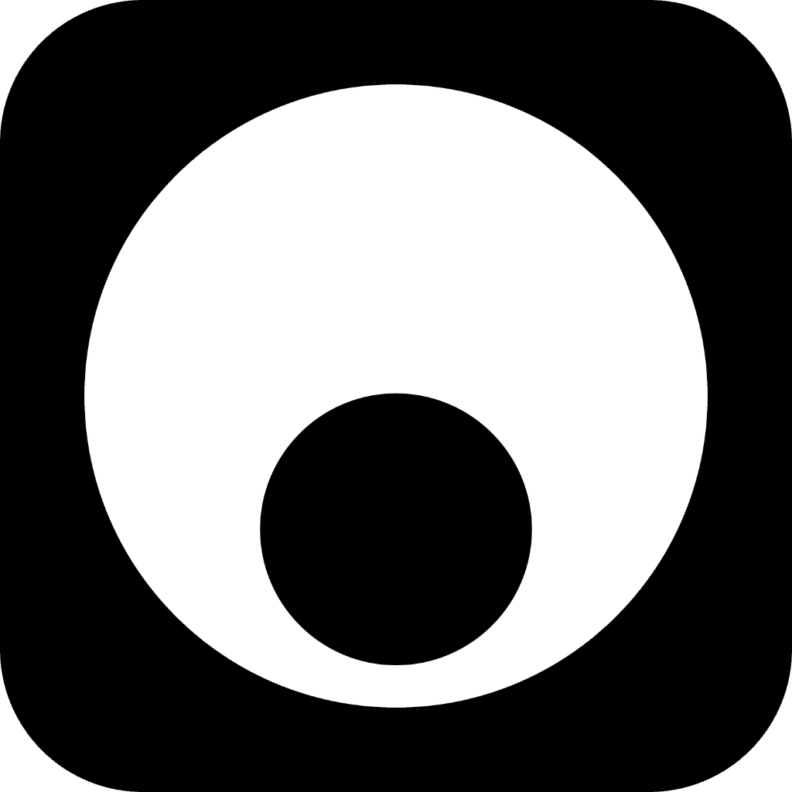

ようこそ。
心は、ただ思考が生まれる場所ではありません。 日々の生活が繰り広げられる場所でもあります。
MINDBEBOPは、思考や注意（意識）とのさまざまな関わり方を提供する心のノイズキャンセリングアプリのシリーズです。
一日の中で、私たちの注意（意識）は、仕事、家族、会話、記憶、やるべきこと、アイデア、娯楽、そしてまだ起きていない出来事の間を行き来しています。
意識的に注意（意識）を向けることもあれば、 気づかないうちに注意（意識）が移っていることもあります。
家にいるのに、頭の中ではまだ仕事をしている。 仕事をしているのに、気持ちは別のところにある。 大切なことについて考えているものの、今はそれに対して何もできない。 そんなこともあるでしょう。
難しさの原因は、必ずしも思考そのものにあるとは限りません。 思考と注意（意識）、そして今自分がしたいこととの関係にある場合もあります。
頭の中にあることに対して、もっとさまざまな関わり方ができるとしたら？
それがMINDBEBOPの出発点です。
連続利用記録も、スコアもありません。 すべての思考に対処する必要もありません。
しかし、すべての思考がタスクになるわけではありません。
思考には、やるべきこと、探求したいこと、思い出、恐れていること、あるいはただ大切にしておきたいことなど、さまざまなものがあります。
To Doアプリは、やるべきことの管理に役立ちます。 カレンダーは、いつ何をするかを整理するのに役立ちます。
どちらも便利なツールです。 しかし、私たちの頭の中にあるものすべてが、チェックリストやスケジュールに収まるわけではありません。
複数のプロジェクトが同時に気になっているかもしれません。 やるべきことは分かっているのに、なかなか取りかかれないこともあります。 すぐに行動に移すことなく、アイデアをじっくり探求したいこともあるでしょう。 忘れることなく、ひとまず何かを脇に置いておきたいこともあります。
MINDBEBOPは、行動につながる思考にも、そうでない思考にも対応するためのさまざまな方法を提供します。
タスクを整理する。 プロジェクトを進める。 アイデアを探求する。 物事の捉え方を見直す。 行動するための準備をする。 あるいは、ただ思考に居場所を与える。
思考は、行動に移すものでも、じっくり取り組むものでも、ただ心に留めておくものでもあります。
何かが気になっているとき、考え続けるか、考えるのをやめようとするか、その二つだけから選ぶ必要はありません。
ほかにも、さまざまな選択肢があります。
別の視点。
起きたことを否定せずに、同じ思考を別の角度から見てみる。
別の時間。
何度も自分に思い出させる代わりに、その思考に再び向き合う時間を決める。
別の場所。
ほかの思考、タスク、アイデア、プロジェクトとともに、思考に目に見える居場所を与える。
少しの距離。
自分とデジタルによる注意（意識）の分散との間に、一時的な境界をつくる。
少しの静けさ。
新しい情報を取り入れることをしばらくやめ、今ある思考が落ち着くための余白をつくる。
進む方向。
自分が向かいたいところへ、小さな無理のないステップを踏みながら進む。
MINDBEBOPのさまざまなツールを通じて、こうした選択肢を利用できます。 それぞれを単独で使うことも、必要に応じて組み合わせることもできます。
同じ思考でも、その時々によって必要な関わり方は変わるかもしれません。
思考、タスク、プロジェクト、アイデアのための空間。
棚も、引き出しも、部屋の仕切りも、家具もない家で暮らすことを想像してみてください。
あらゆるものを、十分に分けたり整理したりすることなく、同じ空間に置くことになります。
頭の中にさまざまなことが同時に存在するときにも、似たようなことが起こる場合があります。
MindBackyardの思考空間では、 思考を保存可能な思考ブロックに変え、三次元空間の中に配置することができます。
思考ブロックは、頭の中にあるさまざまなものを表すことができます。
思考ブロックを移動する。 回転させる。 大きさを変える。 関連する思考を近くに配置する。 思考同士に関連性を持たせる。 自分にとって分かりやすい形に配置する。
思考ブロックの中に、入れ子構造の思考空間をつくることもできます。
例えば、あるプロジェクトを表す思考ブロックの中に、そのプロジェクトに関するタスク、アイデア、懸念事項、計画などを配置した別の思考空間をつくることができます。
思考空間は、作業スペース、計画を立てる場所、アイデアの集積場所、個人的な記録の保管場所、あるいは思考を使った実験の場にもなります。
決められた方法で整理する必要はありません。
思考空間には、思考ブロックとのさまざまな関わり方を提供するオブジェクト、思考家具を配置することもできます。
思考を整理するだけでなく、探求したり、別の視点から見つめたり、ガイドに沿ったプロセスを通じて思考に取り組んだりすることができます。
思考家具の種類によって、異なる関わり方が用意されています。
すぐに何かをする必要はなく、思考ブロックを思考家具に置いたままにしておくこともできます。
ひとつの思考ブロックに、ひとつまたは複数のMental Stepsのセットを関連付けることができます。
例えば、プロジェクトを表す思考ブロックに、作業を始めるためのMental Steps、進捗を確認するためのMental Steps、次に何をするかを決めるためのMental Stepsなどを関連付けることができます。
心配事を表す思考ブロックには、その心配事を探求するためのMental Stepsや、具体的な行動を起こすためのMental Stepsを関連付けることもできます。
思考ブロックから、新しいMental Stepsのセットを直接作成することもできます。
これにより、思考を整理することと、その思考に対して何かをすることの間を行き来できるようになります。
思考空間は、ただ思考を置いておく場所ではありません。思考を使って作業する場所でもあります。
今いるところから、向かいたいところへ。
GPSナビゲーションを使うときのことを考えてみてください。
現在地を確認し、目的地を選び、ルートに沿って進みます。 途中で状況が変われば、ルートも変わります。
メンタル・ナビゲーションは、これと似た考え方を心の動きに応用したものです。
現在地とは、今の自分が実際にいるところです。 自分がいるべきだと思っているところではありません。
Mental Destination（地点B）とは、自分が向かいたいところです。
タスクに取りかかること、何かを決めること、仕事のことをいったん忘れること、物事の捉え方を変えること、会話の準備をすること、あるいは単に何かを始められる状態になることかもしれません。
現在地からMental Destinationまでの距離は、近く感じられることもあれば、遠く感じられることもあります。
その距離を一度に進む必要はありません。
Mental Stepsとは、Mental Destinationに向かって進むための、小さな行動を組み立てたものです。
ひとつのMental Stepには、例えば次のようなものがあります。
MindEntryでは、 Mental Stepsがひとつずつ提示されます。
ひとつのルートには、ほかのMINDBEBOPアプリを使うステップも、現実の世界で行動するステップも、その両方も組み込むことができます。
繰り返し遭遇する状況に備えて、自分だけのMental Stepsのセットを作成し、保存することもできます。
また、Mental Stepsを思考空間内の思考ブロックに関連付けることで、その思考に取り組みたいときにいつでも利用できるようになります。
メンタル・ナビゲーションは、何が起きても決められたルートを進み続けるというものではありません。 進んでいく中で現在地が変われば、それに応じてルートも変わります。
Mental Destinationを選ぶのは自分自身。今、見えていればいいのは次の一歩だけです。
覚えておきたい到着から、大切なものを残す。
Mental Destinationにたどり着くまでの過程で、何か役立つものを見つけることがあります。
なかなか始められなかったことに取りかかる方法を見つけたかもしれません。 繰り返し浮かぶ思考に対して、別の視点を見つけたかもしれません。 仕事のことをいったん忘れ、残りの一日を楽しむためのきっかけを見つけたかもしれません。
次に似たような状況に遭遇したとき、以前何が役に立ったのかをすぐには思い出せないこともあります。
MindAnchorは、目的地にたどり着いたときの大切なものを残すための仕組みです。
それは、ひとつの思考、気づき、物事の捉え方、あるいは前に進むために役立った何かかもしれません。
毎回ゼロから見つけ直すのではなく、再び必要になったときに利用できるようにしておくことができます。
MindAnchorは、まったく同じ体験を再現することを求めるものではありません。 必要なときに立ち戻ることのできる、なじみのあるものを残しておくための仕組みです。
今日見つけた何かが、明日また役に立つかもしれません。
次に何かをする必要がないときもある。
現在、多くのソフトウェアは、ユーザーにどれだけ利用してもらえるかを重視して設計されています。
どれくらい頻繁に戻ってくるか。 どれくらい長く利用するか。 どれくらい操作するか。 どれくらい多くのコンテンツを消費するか。
MINDBEBOPは、利用時間や操作の量が多いほどよいとは考えていません。
MINDBEBOPのアプリを開き、数秒だけ使って、もともとしていたことに戻ることもあるでしょう。
思考空間でじっくりと思考に取り組んだり、 MindZoneOutで静かな時間を過ごしたりすることもあるでしょう。
それ以上、何のツールも必要としないこともあります。
MindBlankは、一般的な利用状況の測定とは反対の方向に目を向けます。 対応する状況において、MINDBEBOPを能動的に操作していない時間に着目するものです。
その間、本当に頭の中が空っぽだったのか、何を考えていたのかを把握できると主張するものではありません。
スコアでも、連続利用記録でも、診断でも、パフォーマンスの指標でもありません。 達成すべき目標もありません。
すべての時間を、何かをするための時間に変える必要はありません。
Mental Background OS
MINDBEBOPの各アプリには、それぞれの役割があります。
ほかのアプリをインストールしたり利用したりする必要はなく、どのアプリも単独で利用できます。
しかし、アプリ同士を連携させることもできます。
これらのツールやコンセプトをつなぐ仕組みを、 Mental Background OSと呼んでいます。
お使いのデバイスのOSに取って代わるものではありません。 思考や注意（意識）とのさまざまな関わり方を可能にする、連携した環境です。
ひとつの思考を、どう扱いたいかに応じて、異なるツールの間で移動させることができます。
例えば、次のような使い方があります。
プロジェクトに取り組む
MindBackyardで、 プロジェクトを思考ブロックとして整理する。
思考ブロックに、 MindEntryのMental Stepsのセットを関連付ける。
作業中は、 MindBackOutを使って、 注意（意識）をそらすアプリを一時的にブロックする。
関係のないことが頭に浮かんだら、 MindShoutOutを使って、 あとで思い出せるようにする。
プロジェクトの作業を続ける。
仕事のことをいったん忘れる
夜の時間を楽しむことをMental Destinationとして、 MindEntryでMental Stepsを開始する。
MindShoutOutを使って、 まだ終わっていない仕事ややるべきことに、別の時間を与える。
MindFlipOutを使って、 気になる嫌な思考を別の視点から見てみる。
MindZoneOutで、 少しの間、静かな時間を過ごす。
自分の夜の時間に戻る。
これらは使い方の一例であり、決められたルーティンではありません。
別のルートをつくることも、異なるツールを組み合わせることも、ある瞬間にひとつのアプリだけを使うこともできます。
ツール同士はつながっています。どう使うかは、自分次第です。
思考や注意（意識）との異なる関わり方を提供する、6つの小さなアプリ。 それぞれを単独で使うことも、必要に応じて組み合わせることもできます。
思考のためのアプリ遮断壁。
少し距離を置く。 MindBackOutは、 選択したアプリとの間に一時的な境界をつくります。 単独で利用できるほか、メンタル・ナビゲーション中に、対応するMental Stepsをデジタルによる注意（意識）の分散から守ることもできます。
思考のオフライン空間。
思考に少しの静けさを。 MindZoneOutは、 思考が自然に落ち着くための、刺激の少ない環境を提供します。 メンタル・ナビゲーション中や、思考空間で思考に取り組んでいるときに、思考を休ませる時間を取るためにも利用できます。
思考の反転ノート。
思考に別の視点を。 MindFlipOutでは、 重い思考に対して、より軽い思考による応答をつくることができます。 単独で利用できるほか、別の視点が役立つ場面でMental Stepsの一部として利用することもできます。

思考の外付けメモパッド。
思考に別の時間を。 MindShoutOutでは、 思考がリマインダーとして再び戻ってくる時間を設定できます。 あとでその思考に戻る機会を失うことなく、今は脇に置いておくことができます。
思考の実験空間。
思考に居場所を。あるいは、注意（意識）に移動できる場所を。 MindBackyardには、 二つの異なる環境が用意されています。
Infinite Hallwayは、落ち着かない注意（意識）が自由にさまようことのできる、終わりのない空間を提供します。
思考空間は、タスク、プロジェクト、アイデア、その他の思考を、保存可能な思考ブロックとして整理するための三次元空間です。 思考同士に関連性を持たせたり、入れ子構造の思考空間を探求したり、思考家具を使ったり、思考ブロックにMental Stepsを関連付けたりすることができます。
思考のルートナビ。
次の一歩を踏み出す。 MindEntryは、 Mental Stepsを通じて、現在地からMental Destinationへ向かうためのガイドを提供します。
Mental Stepsでは、ほかのMINDBEBOPツールと現実の世界での行動を、ひとつのルートに組み込むことができます。 現在地の変化に応じて、ルートも変わります。
MINDBEBOPは、これらのさまざまな可能性を、三つの大きなコンセプトにまとめています。
減らす。
不必要に注意（意識）を求め続けるものを減らす。
思考に別の視点、別の時間、別の場所を与える。
注意（意識）をそらすものから距離を置いたり、思考に少しの静けさを与えたりする。
進む。
向かいたいところがあるとき、Mental Stepsを使って現在地からMental Destinationへ向かう。
残す。
意味のある目的地にたどり着いたとき、MindAnchorを通じて、その到着から大切なものを残す。
これらは、順番に完了させなければならない三つの段階ではありません。
プロジェクトに取り組む前に、注意（意識）をそらすものを減らしたいこともあるでしょう。 どこかへ向かうことなく、思考を整理したいこともあるでしょう。 すぐにMental Stepsを始めたいこともあるでしょう。 以前MindAnchorで残したものに、もう一度立ち戻りたいこともあるでしょう。
あるいは、今はそのどれも必要ないかもしれません。
選択肢があることは、それを選ばなければならないということではありません。
デジタルデトックスは、新しい情報を絶えず受け取り続けることが、私たちの注意（意識）の使い方に影響を与えるという考えに基づいています。
しかし、受け取った情報は、デジタルデバイスを手放したあとも、長い間、頭の中に残り続けることがあります。
そして、私たちの注意（意識）を占めるものすべてが、デジタルデバイスから来るわけではありません。
責任、記憶、期待、恐れ、欲求、未完了のタスク、将来の計画なども、頭の中のバックグラウンドで動き続けることがあります。
MINDBEBOPでは、不必要な心のノイズや思考の摩擦を減らすためのアプローチを、 Mental Background Detoxと呼んでいます。
頭の中を空っぽにすることでも、思考をなくすことでも、すべての思考を問題として扱うことでもありません。
注意（意識）を占めているものに対して、実用的な関わり方を持つことです。 整理したいときも、探求したいときも、行動に移したいときも、あとで向き合いたいときも、そのままにしておきたいときも。
MINDBEBOPは、診断ツールでも治療法でもありません。 思考や注意（意識）とのさまざまな関わり方を提供する、日常生活のためのツールです。
アプリを使い始める前に、MINDBEBOPのすべてのコンセプトを理解する必要はありません。
思考空間をつくる必要も、Mental Stepsのセットを作成する必要も、ルーティンを確立する必要もありません。
すでに自分の日常生活の中にあることから始めてみてください。
整理したいプロジェクト。 別の視点から見てみたい思考。 あとで思い出したいこと。 少し距離を置きたいもの。 自分が向かいたいところ。
あるいは、ただ少しの静けさが欲しいときに。
思考には、別の視点を与えることができる。
別の時間を与えることができる。
別の場所を与えることができる。
行動に変えることもできる。
思考のままにしておくこともできる。
自分の心との関わり方は、ひとつではありません。
MINDBEBOP
心のノイズキャンセリングアプリ。
減らす。進む。残す。
Copyright © 2026 MINDBEBOP — All rights reserved.